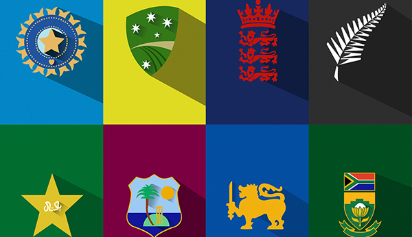

- Home Page
- CBF
- AFA
- CBF
- Confederação Brasileira de Futebol (CBF) é a entidade máxima do futebol no Brasil. Fundada em 20 de agosto de 1914, antiga CBD[1], a atual CBF é responsável pela organização de campeonatos de alcance nacional. Também administra a Seleção Brasileira de Futebol Masculino, cinco vezes campeã mundial, e a Feminina, vice-campeã mundial.
A CBF é uma associação privada cuja principal atividade econômica é a produção e promoção de eventos esportivos. A ela respondem as Federações estaduais, responsáveis pelos campeonatos em cada Unidade da Federação. Sua sede localiza-se na Barra da Tijuca, no Rio de Janeiro. A Confederação também pertence um centro de treinamento localizado no bairro Granja Comary, em Teresópolis no Rio de Janeiro.
Voltar ao Topo
- AFA
-
A Associação de Futebol da Argentina (AFA) é a entidade máxima do futebol na Argentina. Fundada em 21 de fevereiro de 1893 é responsável pela organização de campeonatos de alcance nacional, como o Campeonato Argentino de Futebol. Também administra a Seleção Argentina de Futebol, duas vezes campeã mundial (1978, quando sediou a competição, e 1986 no México), e a Seleção Argentina de Futebol Feminino.
Voltar ao Topo